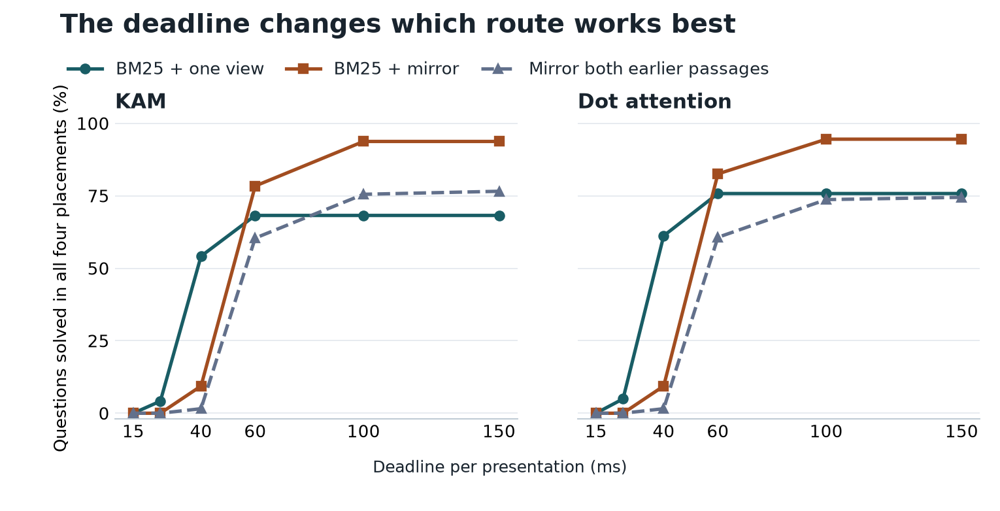
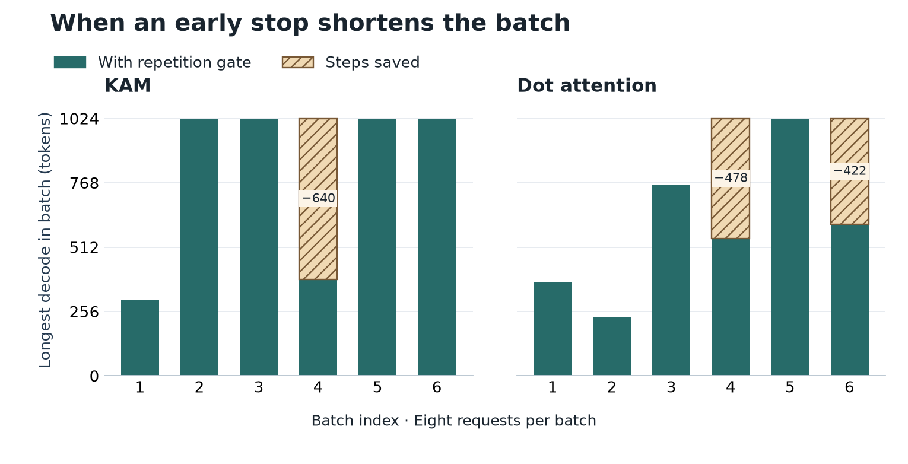

Chapter 5
Reading the experiments
A retrieval method can only select evidence that made it into its candidate pool.
Derive the coverage bound
Let C mean that the candidate pool contains both gold documents, and R mean that the selector returns both. Every success in R must come from C. Multiplying candidate coverage by success among eligible pools gives the overall rate.
On 768 held-out HotpotQA questions, 468 pools contained both documents. The context-aware pair scorer succeeded on 323 linked and 23 unlinked questions, so it succeeded on 346 of the 468 eligible pools. Multiply (468/768) × (346/468) = 346/768 ≈ 45.1%. The coverage ceiling is 468/768 ≈ 60.9%.
Interactive lab · Compare the same selectors by cohort
Change the cohort to see how the denominator and the ranking change. Success means both gold documents were selected.
Context-aware pair scorer: 346 / 768 (45.1%)
Learned sequential: 136 / 768 (17.7%)
Learned single-shot top two: 117 / 768 (15.2%)
468 of 768 pools contain both supports, giving a 60.9% coverage ceiling.
Check your understanding · Can a better selector recover missing evidence?
With the same pool it cannot. Increasing coverage requires changing the candidate retrieval step. Better coverage then gives the selector more opportunities, while conditional selection accuracy can still change.
Does the choice follow the evidence?
Put two plausible endpoints in slots A and B. A position-consistent reader should choose the same passage after the slots swap. Put two earlier passages above them and the reader must also decide which chain starts at the question.
| Verified earlier passage | Llama KAM | Llama dot |
|---|---|---|
| First | 17.86% | 29.17% |
| Second | 48.02% | 39.68% |
| Correct in all four orders | 12.90% | 17.86% |
Suppose the logit margin B − A is +2.0 with the endpoints in their original order and +0.4 after swapping them. B wins both single choices. Subtracting the two margins gives +1.6, which favors the passage originally in B. The subtraction removes an additive preference shared by both prompts.
Using that two-pass rule at each earlier order, KAM was correct in both orders on 71.63% of questions and dot on 73.61%. The paired interval for their difference spans zero. Matched evidence experiment
Choose the earlier passage first
The sequential path first chooses one earlier passage and then shows just that passage with the two endpoints. Across all four orders, it raised KAM from 12.90% to 66.87% and dot from 17.86% to 72.82%. It sent about 519 input tokens through two calls per decision, compared with 397 through the original direct call. Two-hop comparison
Give each decision a deadline
On 128 fresh MuSiQue questions from the publisher’s training split, a question counted as solved only if all four placements were correct and each decision took at most 60 ms. Mirrored scoring solved 61.20% for KAM and 61.72% for dot. The live sequential route solved 44.01% and 49.74%. These GPU timings start with fixed candidates and include the model calls and choice. Live routing experiment
Pick the first passage before mirroring
BM25 chooses one earlier passage in the two-candidate pool. Both endpoint views then reuse that shorter context. At 60 ms per presentation, the combined route solved 78.39% for KAM, 82.55% for dot and 89.84% for untouched Llama. At 40 ms, the single-view route solved more questions.


What does reading four values save?
To select the four highest-scoring keys exactly, a query at position t scores all t eligible keys. At 4,096 tokens, causal prefill therefore computes 4,096 × 4,097 ÷ 2 = 8,390,656 eligible scores per head. Gathering four values per query brings the number of value slots read down to at most 16,384. The score scan remains quadratic in context length.
| Metric | Fused dense | Exact top-four |
|---|---|---|
| Adapter kernel median CUDA time | 47.82 µs | 119.60 µs |
| Full-reader median wall time | 193.32 ms | 193.58 ms |
| Full-reader incremental allocated peak | 469.14 MiB | 469.14 MiB |
The exact top-four kernel keeps four candidates per key tile and merges them before reading values. That extra work outweighed the sparse value reads in this implementation. Top-four lowered perplexity by 0.44% on 48 independent PG-19 test books. On 320 long MuSiQue questions, the top-four retrieval lead shrank to 0.42 percentage points after subtracting swapped-order margins, with a paired interval that included zero. Long-context study and measurement scope
We then ranked blocks using four representative means and scored the original keys in eight selected blocks. This recovered the exact set on 41% of audited head queries while keeping perplexity and mirrored retrieval close to exact top-four. At 8,192 tokens the adapter kernel ran 18% faster than Flash, including shortlist construction. Full-reader latency and peak memory showed no gain. Block shortlist experiment
Moving the shortlist into eight of Llama’s own layers cut 4,096-token prefill from 196.59 to 194.29 ms. With the same frozen weights and holdout, perplexity rose from 10.21 to 33.76 and mirrored retrieval fell from 68.44% to 48.23%. Replacing all 32 layers cut 8,192-token prefill by 9.2%, with the same peak allocation. This separates a kernel speedup from a useful model tradeoff. Backbone attention experiment
Reserving one of the eight slots for the first block raised retained dense attention mass from 53.19% to 93.92% at positions where pruning is possible. With eight layers replaced, perplexity recovered to 10.49 and mirrored retrieval to 65.31%. The matched Flash references were 10.21 and 68.44%. The protected shortlist kept the prefill speedup, and retrieval declined at greater replacement depths. Layerwise attention-mass experiment
The protected shortlist kept just 14.98% of attention on the earlier evidence outside the first block at the final choice query. Selecting sixteen layers for Flash from separate development questions raised that coverage to 75.43%. Compared with using Flash in every other layer, perplexity improved from 10.80 to 10.48 at the same prefill latency, and mirrored retrieval stayed near 59%. Distant-evidence and layer-head results
Using Flash for the final 256 queries in every layer improved mirrored retrieval by 7.40 points over using Flash for the preceding 256 queries. Both windows took about 189 ms at 4,096 tokens. On new questions, the final window’s lead over the protected shortlist reversed as context grew from 4,096 to 8,192 tokens. Query-position experiment · Independent length test
To test whether a reader uses an earlier passage, replace it with the same tokens used in a nearby background control. The signed gold-endpoint margin fell by 0.442 logits with Flash, 0.127 with the final window, and 0.016 with the protected shortlist. The final window recovered part of the evidence dependence. Controlled passage replacement
On independently selected HotpotQA questions, the final window saved 3.02% of prefill at 4K and 8.11% at 8K. Its 4K mirrored accuracy was 49.48%, compared with 62.24% for Flash. The 8K paired interval included zero. Cross-corpus comparison with linked and unlinked distractors
At a fixed eight-block budget, pinning the marked earlier passage raised 4K mirrored accuracy by about eleven points on MuSiQue and ten on HotpotQA when the earlier passage named only the gold endpoint. The linked and 8K effects were less certain. These prompts supplied the earlier passage explicitly. Evidence pinning with matched controls
Giving twelve blocks to layers where they best reconstructed Flash outputs improved 8K HotpotQA from 42.71% to 59.64% at 9.21% lower prefill latency. The same allocation increased 8K PG-19 perplexity from 10.81 to 12.60 and lost accuracy on 4K MuSiQue. Measure both tasks and both lengths before interpreting the speedup. Matched layer-budget experiments
On 452 QuALITY questions with intact articles, the final Flash window reached 66.59% after balancing four answer orders, versus 69.10% for full Flash and 58.04% for the protected shortlist. The reconstruction-selected allocation reached 58.78%. The final window saved 8.26% prefill time at 8,189 tokens. Native long-document comprehension
Grade the mathematics across answer forms
Equivalent answers can look different. For example, squaring both nonnegative expressions shows that √8 and 2√2 represent the same number. A symbolic grader can accept either form without requiring the model to write a special marker.
| Backbone | Untouched | KAM | Dot |
|---|---|---|---|
| SmolLM2 | 22.80% | 23.53% | 22.80% |
| Llama 3 | 29.40% | 27.67% | 28.13% |
The six fitted adapters per backbone shared the development-selected KL weight and used three matched seeds. Both full-set KAM–dot intervals span zero. The Llama ranking differed by answer type on MATH-500. On 478 disjoint questions matched by subject and difficulty, the Llama KAM–dot gap was +1.67 points on integers and +0.14 on other answers.
Full MATH-500 study · Balanced replication and figure · Benchmark scorecard
Change the grader on the same answers
These Llama adapters saw the same 512 GSM8K questions and the same #### prompt. The two graders read the exact same generated text. For example, #### $42 can express a mathematically correct amount while failing the strict bare-number grammar.
Shared equivalence scored KAM 87.37% and dot 84.64%. Equivalence on the marked line scored KAM 86.20% and dot 84.18%. Strict grading scored KAM 53.45% and dot 58.92% on the same outputs.
Prompt and grading experiment · Equivalence grader stress test
Why stopping one answer may leave batch time unchanged
In the fixed-batch decoder, the longest response determines how many steps the batch runs. If the longest response would take 1,024 steps and the next-longest would take 546, stopping the longest can save at most 478 batch steps.


In this 48-request panel on an HPG RTX PRO 6000, the repetition gate reduced elapsed generation time by 12.95% for KAM and 24.10% for dot. Every unaffected token trace matched. On the separate full-cohort replay, the gate preserved previously verified answers. Timing protocol and results
Can a reader stay with the current table?
TabMWP asks questions about data in a table. Keep that current table and the question fixed, then add a different table with the same topic and shape. Label the second table archival and move it before or after the current table.
| Supplied tables | Llama KAM | Llama dot |
|---|---|---|
| Current only | 64.06% | 65.10% |
| Archive before current | 45.83% | 43.49% |
| Archive after current | 38.02% | 36.46% |
The two archive orders have the same input length. Both adapters scored lower with the archive nearest the question. The result motivates checking which source a reader uses before measuring its arithmetic. Matched table analysis
On 94 questions where we could match lengths exactly, replacing the same-topic archive with a different-topic archive raised accuracy by 28.01 points for KAM and 22.70 for dot. The current table and question stayed fixed. Equal-length comparison
On a fresh 128-question panel, selecting the current table by its supplied record ID scored 50.78% for KAM and 49.48% for dot. Reading both tables with the archive last scored 27.86% and 24.48%. The experiment measures the benefit of a correct source ID. Typed source selection
The equal-length result also held on 83 fresh questions. The different-topic archive raised scores by 15.26 points for KAM and 20.88 for dot. Fresh exact-length replication
Read the studies
- Can the model recover the correct revision?
- At 48 candidates in the Dallas Fed archive, radial recovery rose from 3.8% to 57.6% after training on synthetic histories that model clusters of releases. The evaluation supplied typed identities and used answerable questions. Archive experiment and plot.
- Can a pair scorer recover two pieces of evidence?
- In a held-out HotpotQA study, the pair scorer led when the two supporting documents linked to each other. Sequential retrieval led on unlinked evidence. These results use separate retrieval heads with shared candidate pools. Supporting-link study.
- Can the radial read run on a fast attention kernel?
- In the tested full-context variant, expanding the squared distance produces a dot product plus a key-dependent term. The query-only term cancels in softmax. That lets the scorer use an optimized attention kernel. Derivation and GPU timings.